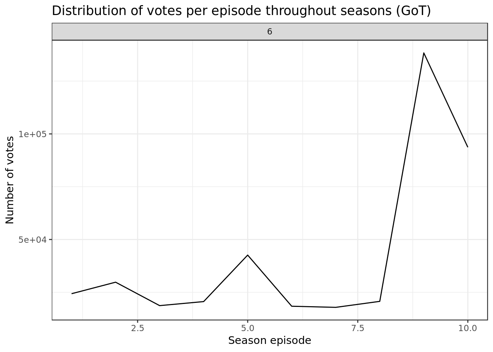
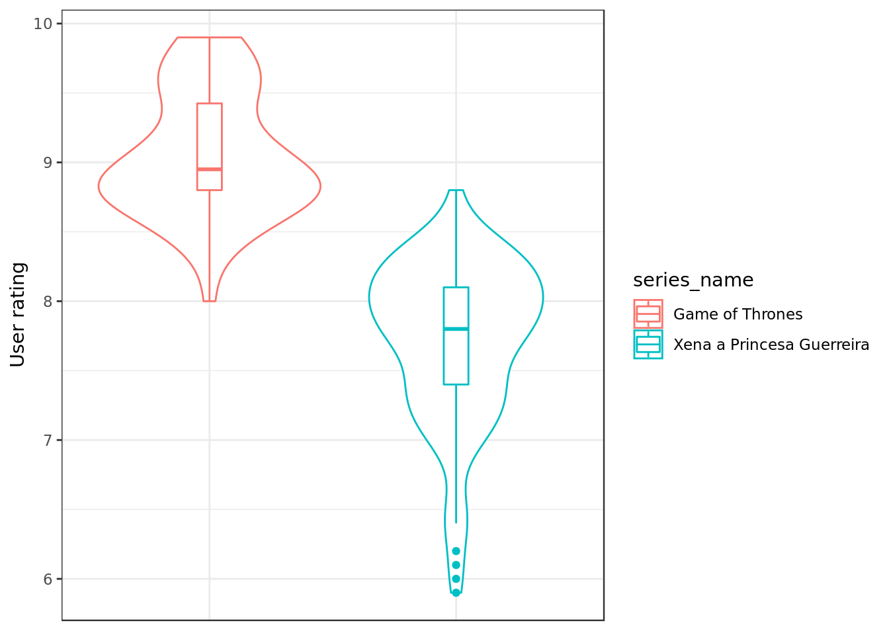
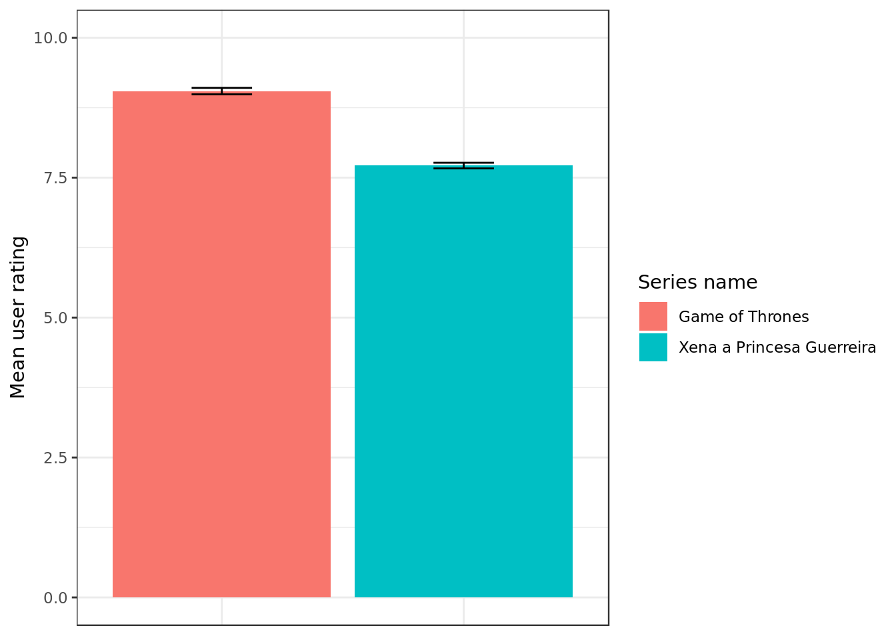
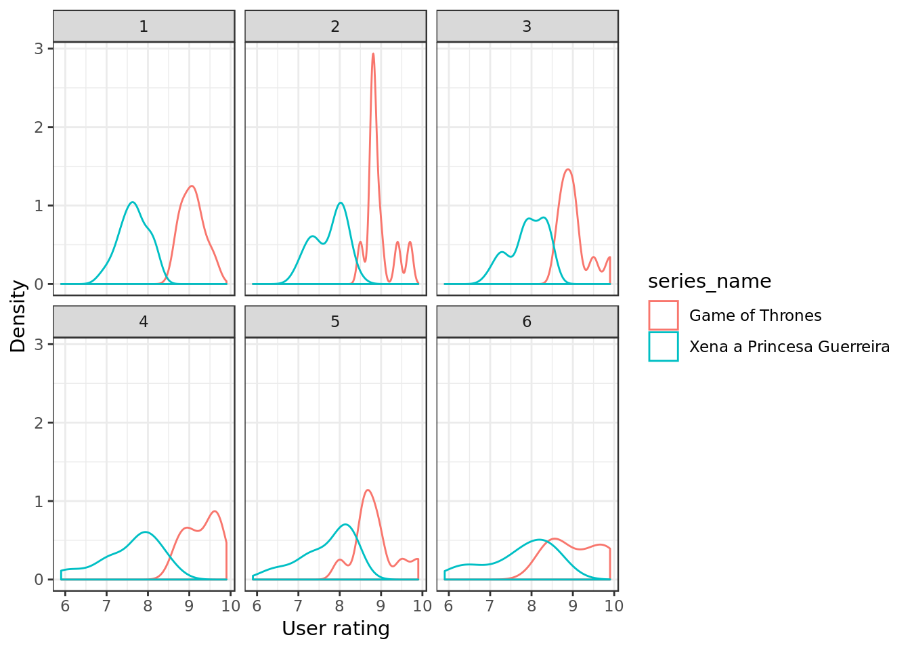
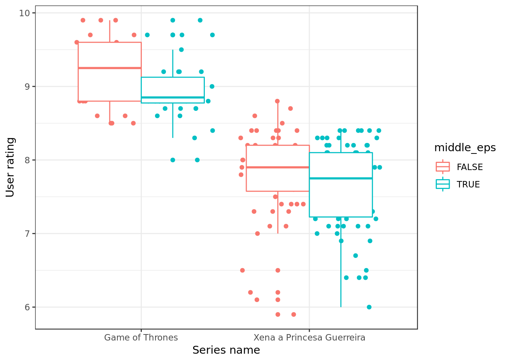
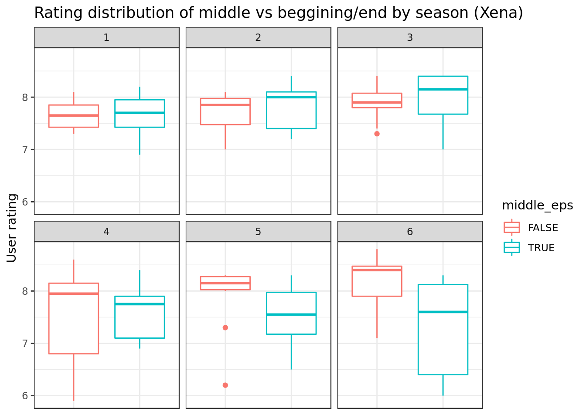

Chakrans and Dragons on IMDB
Employed data
Exploratory data analysis on IMDB data about TV series. Original data comes from this repository, there we have an explanation on how the data was gathered and the meaning of each variable.
Data under analysis
Before the staggering number of different series available in our data we will analyse the following two:
- Game of Thrones
- Xena The Warrior Princess (in Portuguese Xena a Princesa Guerreira)
Data Overview
episodes = read_csv(here("evidences/series_from_imdb.csv"),
progress = FALSE,
col_types = cols(.default = col_double(),
series_name = col_character(),
episode = col_character(),
url = col_character(),
season = col_character())) %>%
filter(series_name %in% c("Game of Thrones","Xena a Princesa Guerreira"))
episodes %>%
glimpse()## Observations: 194
## Variables: 18
## $ series_name <chr> "Xena a Princesa Guerreira", "Xena a Princesa Guerre…
## $ episode <chr> "Sins of the Past", "Chariots of War", "Dreamworker"…
## $ series_ep <dbl> 1, 2, 3, 4, 5, 6, 7, 8, 9, 10, 11, 12, 13, 14, 15, 1…
## $ season <chr> "1", "1", "1", "1", "1", "1", "1", "1", "1", "1", "1…
## $ season_ep <dbl> 1, 2, 3, 4, 5, 6, 7, 8, 9, 10, 11, 12, 13, 14, 15, 1…
## $ url <chr> "http://www.imdb.com/title/tt0394990/", "http://www.…
## $ user_rating <dbl> 7.9, 7.4, 7.7, 7.4, 7.5, 7.7, 7.5, 8.0, 7.8, 7.6, 7.…
## $ user_votes <dbl> 440, 339, 318, 297, 288, 282, 270, 303, 278, 287, 27…
## $ r1 <dbl> 0.003623188, 0.025641026, 0.064516129, 0.023474178, …
## $ r2 <dbl> 0.04347826, 0.03846154, 0.03548387, 0.02347418, 0.02…
## $ r3 <dbl> 0.010869565, 0.038461538, 0.029032258, 0.004694836, …
## $ r4 <dbl> 0.007246377, 0.034188034, 0.022580645, 0.023474178, …
## $ r5 <dbl> 0.018115942, 0.042735043, 0.019354839, 0.046948357, …
## $ r6 <dbl> 0.02536232, 0.12393162, 0.03870968, 0.06103286, 0.12…
## $ r7 <dbl> 0.08695652, 0.16239316, 0.05161290, 0.11267606, 0.13…
## $ r8 <dbl> 0.1086957, 0.1666667, 0.1354839, 0.2112676, 0.180451…
## $ r9 <dbl> 0.15579710, 0.09829060, 0.17096774, 0.18309859, 0.13…
## $ r10 <dbl> 0.5398551, 0.2692308, 0.4322581, 0.3098592, 0.338345…On average how many votes there are for an episode of a season?
episodes %>%
filter(series_name %in% c("Xena a Princesa Guerreira")) %>%
ggplot(aes(x = season_ep, y = user_votes)) +
geom_line() +
facet_wrap(~ season) +
labs(x="Season episode",
y= "Number of votes",
title="Distribution of votes per episode throughout seasons (Xena)")
The series Xena overall had hundreds of votes for each episode throughout its six seasons.
episodes %>%
filter(series_name %in% c("Game of Thrones")) %>%
filter(season != 6) %>%
ggplot(aes(x = season_ep, y = user_votes)) +
geom_line() +
facet_wrap(~ season) +
labs(x="Season episode",
y= "Number of votes",
title="Distribution of votes per episode throughout seasons (GoT)")
The series GoT had tenths of thousands of votes for each episode throughout its first five seasons. Furthermore, there are some episodes with a lot more votes than the rest.
episodes %>%
filter(series_name %in% c("Game of Thrones")) %>%
filter(season == 6) %>%
ggplot(aes(x = season_ep, y = user_votes)) +
geom_line() +
facet_wrap(~ season) +
labs(x="Season episode",
y= "Number of votes",
title="Distribution of votes per episode throughout seasons (GoT)")
On its sixth season GoT had a considerable increase in votes, reaching figures on the scale of hundreds of thousands of votes.
Hom many episodes per season?
episodes %>%
ggplot(aes(season, fill=series_name)) +
geom_bar(position="dodge") +
ggtitle("Número de episódios por temporada") +
labs(x="Season", y="Number of episodes",
title="Number of episodes per season")
The series Xena has around 20 to 25 episodes per season while GoT maintains the number of 10 episodes per season.
Which of the series is better rated on IMDB?
sumario_simples <- episodes %>%
select(user_rating, series_name) %>%
group_by(series_name) %>%
summarise(
mean = mean(user_rating),
max = max(user_rating),
min = min(user_rating),
q1 = quantile(user_rating, 0.25),
q2 = quantile(user_rating, 0.50),
q3 = quantile(user_rating, 0.75)
)
sumario_simples## # A tibble: 2 x 7
## series_name mean max min q1 q2 q3
## <chr> <dbl> <dbl> <dbl> <dbl> <dbl> <dbl>
## 1 Game of Thrones 9.05 9.9 8 8.8 8.95 9.43
## 2 Xena a Princesa Guerreira 7.72 8.8 5.9 7.4 7.8 8.1episodes %>%
ggplot(aes(x = series_name,
y = user_rating,
group=series_name,
color=series_name)) +
geom_violin() +
geom_boxplot(width=.1) +
theme(axis.title.x=element_blank(),
axis.text.x=element_blank(),
axis.ticks.x=element_blank()) +
labs(y="User rating") * GoT rating overall are higher than Xena’s, this is reflected in the chart where both the red violin plot and box plot (GoT) are above the red violin plot and box plot (Xena). * The most frequent ratings for GoT are around [8.5, 9] (lengthiest part of the red violin) while the most frequent ratings for Xena are around 8.0 (lengthiest part of the blue violin).
** The series Game of Thrones seems to be better rated than the series Xena a Princesa Guerreira no IMBD**.
episodes %>%
group_by(series_name) %>%
summarise(
mean = mean(user_rating),
sd = sd(user_rating),
n = n()
) %>%
mutate(se = sd/sqrt(n)) %>%
ggplot(aes(series_name,mean, fill = series_name)) +
geom_bar(stat='identity') +
geom_errorbar(aes(width= 0.25,
ymax = mean + se,
ymin = mean - se)) +
scale_fill_discrete(name = "Series name") +
scale_y_continuous(limits = c(0,10)) +
labs(y = "Mean user rating") +
theme(axis.title.x=element_blank(),
axis.text.x=element_blank(),
axis.ticks.x=element_blank())
- Looking at the height of the bars (Mean user rating) it’s noticeable that GoT’s mean user rating is higher than Xena’s mean user rating.
The mean user rating also suggests that the series Game of Thrones é mais bem avaliada is better rated than the series Xena the Warrior Princess on IMBD, the difference seems to be of 1 point and in terms of series ratings the difference is sizable.
Does it change according to the series season?
episodes %>%
ggplot(aes(x = series_name,
y = user_rating,
fill=as.numeric(season))) +
geom_boxplot(position = position_dodge(width = 0.9)) +
labs(x="Series name", y="User rating")
The median rating/box’s central horizontal line value that divides other values in 50% bigger and 50% smaller and the interquatile range/box that represents 50% of the values fluctuate throughout the series seasons but seem to stay relatively close to the rating 9 for GoT and close to 8 for Xena.
When we compare the distribution of ratings throughout the series seasons we notice that the ratings are affected by what season they belong to (e.g Xena’s ratings show a negative tendency starting from season 4, minimums going from 7 to 6).
episodes %>%
ggplot(aes(x = series_name,
y = user_rating,
color=series_name)) +
facet_wrap(~ season) +
geom_boxplot(position = position_dodge(width = 0.9)) +
theme(axis.title.x=element_blank(),
axis.text.x=element_blank(),
axis.ticks.x=element_blank()) +
ylab("User rating")
Comparing the distribution of each series ratings throughout each seasons (ratings from GoT’s first season compared to ratings from Xena’s first season) we observe that at each of the six seasons the same tendency was maintained. Observing the ratings distribution by means of the interquatile range/box we notice that On all six seasons GoT has overall higher ratings than Xena (GoT’s interquatile range is always above Xena’s).
The series’ ratings vary with the seasons but for comparison purposes GoT maintains a higher rating than Xena.
Which series is the one whose episodes’ quality is the most irregular?
episodes %>%
ggplot(aes(x = series_name,
y = user_rating)) +
geom_jitter(width = 0.25) +
labs(x="Series name",
y="User rating")
GoT ratings go from 8 (minimum) to 9.9 (maximum) and seem to be relatively concentrated around 9, which is in accordance to previous results.
Xena’s ratings go from 5.9 (minimum) to 8.8 (maximum) and seem to be relatively concentrated around 8, which is in accordance to previous results.
The series Xena’s ratings seem to be more irregular than GoT’s ratings as they are disperse in a bigger interval [5.9, 8.8] than GoT’s [8, 9.9].
episodes %>%
ggplot(aes(user_rating,color=series_name)) +
geom_density() +
labs(x="User rating",
y="Density")
The smoothed histogram reinforces the idea that Xena’s ratings are more irregular than GoT’s because Xena’s rating are dispersed around the interval [5.9, 8.8] (beginning and end of blue histogram) while GoT’s ratings are dispersed around the interval [8, 9.9] (beginning and end of red histogram). Besides, the smoothed histogram’s peak (mode or most frequent value) is around 8 for Xena and around 9 for GoT.
episodes %>%
ggplot(aes(x = series_name,
y = user_rating,
color=series_name)) +
geom_jitter(width = 0.25) +
facet_wrap(~ season) +
theme(axis.title.x=element_blank(),
axis.text.x=element_blank(),
axis.ticks.x=element_blank()) +
labs(x="User rating")
episodes %>%
ggplot(aes(user_rating,
color=series_name)) +
geom_density() +
facet_wrap(~ season) +
labs(x="User rating",
y="Density")
Looking at the scatter plot and smoothed histogram of the series seasons it’s possible to see that Xena’s rating GoT more disperse starting from season 4 because points around 6 start to occur (distance between points increase and histograms stretch).
** Xena’s rating are more irregular than GoT’s ratings and the difference is big**, with Xena’s rating going from 6 to 9 while GoT’s ratings go from 8 to 10.
Which of the series has more boring episodes? (An episode is boring when it’s neither loved nor hated)
episodes <- episodes %>%
mutate(
rank_odiados = row_number(r1), # maior = mais odiado
rank_amados = row_number(r10), # maior = mais amado
amado_odiado = rank_amados * rank_odiados) # maior = mais amado E odiado
episodes %>%
ggplot(aes(x = series_name,
y = amado_odiado,
group=series_name,
color=series_name)) +
geom_jitter() +
theme(axis.title.x=element_blank(),
axis.text.x=element_blank(),
axis.ticks.x=element_blank()) +
labs(y= "Hated / Loved")
Xena has a higher concentration of episodes that were neither loved nor hated (amado_odiado close to 0) as the scatter plot clearly demonstrates, while GoT has no episode whose Hate/Love (amado_odiado) is close to 0. Therefore Xena is the series with more boring episodes.
Episodes at the beggining/end of the season are better rated that those at the middle?
We will consider the 20% at the beginning and at the end as the beginning and end of the season, and the central 60% between these two parcels will be the middle of the season. One episode will belong to the middle of the season if it’s included in the aforementioned 60%.
sumario_simples <-
episodes %>%
select(season_ep,season,series_name) %>%
group_by(series_name,season) %>%
summarise(n = n(),
p20 = quantile(seq(from=1, to=n, by=1), 0.20),
p80 = quantile(seq(from=1, to=n, by=1), 0.80))
sumario_simples## # A tibble: 12 x 5
## # Groups: series_name [2]
## series_name season n p20 p80
## <chr> <chr> <int> <dbl> <dbl>
## 1 Game of Thrones 1 10 2.8 8.2
## 2 Game of Thrones 2 10 2.8 8.2
## 3 Game of Thrones 3 10 2.8 8.2
## 4 Game of Thrones 4 10 2.8 8.2
## 5 Game of Thrones 5 10 2.8 8.2
## 6 Game of Thrones 6 10 2.8 8.2
## 7 Xena a Princesa Guerreira 1 24 5.6 19.4
## 8 Xena a Princesa Guerreira 2 22 5.2 17.8
## 9 Xena a Princesa Guerreira 3 22 5.2 17.8
## 10 Xena a Princesa Guerreira 4 22 5.2 17.8
## 11 Xena a Princesa Guerreira 5 22 5.2 17.8
## 12 Xena a Princesa Guerreira 6 22 5.2 17.8episodes <- left_join(episodes, sumario_simples,
by = c("series_name", "season")) %>%
group_by(series_name, season) %>%
mutate(middle_eps = (season_ep > p20) &
(season_ep < p80)) %>%
ungroup()
episodes## # A tibble: 194 x 25
## series_name episode series_ep season season_ep url user_rating
## <chr> <chr> <dbl> <chr> <dbl> <chr> <dbl>
## 1 Xena a Pri… Sins o… 1 1 1 http… 7.9
## 2 Xena a Pri… Chario… 2 1 2 http… 7.4
## 3 Xena a Pri… Dreamw… 3 1 3 http… 7.7
## 4 Xena a Pri… Cradle… 4 1 4 http… 7.4
## 5 Xena a Pri… The Pa… 5 1 5 http… 7.5
## 6 Xena a Pri… The Re… 6 1 6 http… 7.7
## 7 Xena a Pri… The Ti… 7 1 7 http… 7.5
## 8 Xena a Pri… Promet… 8 1 8 http… 8
## 9 Xena a Pri… Death … 9 1 9 http… 7.8
## 10 Xena a Pri… Hooves… 10 1 10 http… 7.6
## # … with 184 more rows, and 18 more variables: user_votes <dbl>, r1 <dbl>,
## # r2 <dbl>, r3 <dbl>, r4 <dbl>, r5 <dbl>, r6 <dbl>, r7 <dbl>, r8 <dbl>,
## # r9 <dbl>, r10 <dbl>, rank_odiados <int>, rank_amados <int>,
## # amado_odiado <int>, n <int>, p20 <dbl>, p80 <dbl>, middle_eps <lgl>We generated the information middle_eps to represent whether an episode belongs to the middle of its season, i.e. if it’s between the 20% initial episodes and the 20% final episodes. If middle_eps is TRUE the episode belongs to the middle of the season, if middle_eps is FALSE the episode belongs to beginning/end of the season.
filtered <- episodes %>%
filter(series_name %in% c("Xena a Princesa Guerreira")) %>%
filter(season == 4)
filtered %>%
ggplot(aes(x = season_ep, y = user_rating, color = series_name)) +
geom_vline(xintercept = filtered$p20,
color = "blue") +
geom_vline(xintercept = filtered$p80,
color = "blue") +
geom_line() +
labs(x="Season episode", y="User rating")
Using the fourth season of Xena as an example the episodes of the middle of the season would be those between the blue vertical lines (percentile 20 and percentile 80, which divide the values in 20%-80% and 80%-20% respectively and thus what’s between them is 60% of the total.
episodes %>%
ggplot(aes(user_rating, color=middle_eps)) +
geom_density() +
labs(x="User rating", y="Density")
The shapes of the smoothed histograms are similar, and the peak of both (mode or most frequent value) match on rating 8, this suggests that without distinguishing seasons from one another the episodes from beggining/end of the season are similarly rated as those from the middle of the season.
Does it change according to series?
episodes %>%
ggplot(aes(x = series_name, y = user_rating, color=middle_eps)) +
geom_point(position = position_jitterdodge(dodge.width=0.9)) +
geom_boxplot(position = "dodge") +
labs(x="Series name", y="User rating")
Distinguishing series it’s possible to notice that the blue boxplots (representing episodes from the middle of the season) are in general below the red boxplots (representing episodes from the beginning/end of the season). Therefore in terms of series the episodes of the beggining/end of the season are better rated.
Does it change according to season?
episodes %>%
filter(series_name %in% c("Xena a Princesa Guerreira")) %>%
ggplot(aes(x = middle_eps,
y = user_rating,
color = middle_eps)) +
facet_wrap(~ season) +
geom_boxplot(position = position_dodge(width = 0.9)) +
theme(axis.title.x=element_blank(),
axis.text.x=element_blank(),
axis.ticks.x=element_blank()) +
labs(y="User rating",
title="Rating distribution of middle vs beggining/end by season (Xena)")
For the series Xena:
On seasons 5 and 6 the episodes at the beginning/end of the season were better rated.
On season 1,2,3 and 4 the difference is less clear.
episodes %>%
filter(series_name %in% c("Game of Thrones")) %>%
ggplot(aes(x = middle_eps,
y = user_rating,
color = middle_eps)) +
facet_wrap(~ season) +
geom_boxplot(position = position_dodge(width = 0.9)) +
theme(axis.title.x=element_blank(),
axis.text.x=element_blank(),
axis.ticks.x=element_blank()) +
labs(y="User rating",
title="Rating distribution of middle vs beggining/end by season (GoT)")
For the series GoT:
On season 5 the episodes at the beginning/end of the season and the ones at the middle are rated similarly.
On seasons 1,2,3,4 and 6 the episodes at the beginning/end of the season are better rated.
Taking in consideration what was seen regarding both Xena as GoT in terms of season the episodes at the beggining/end of the season tend to be better rated than those at the middle of the season.